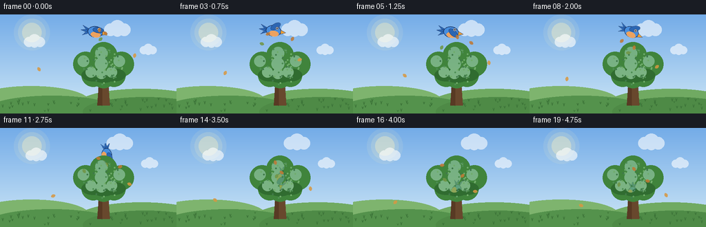
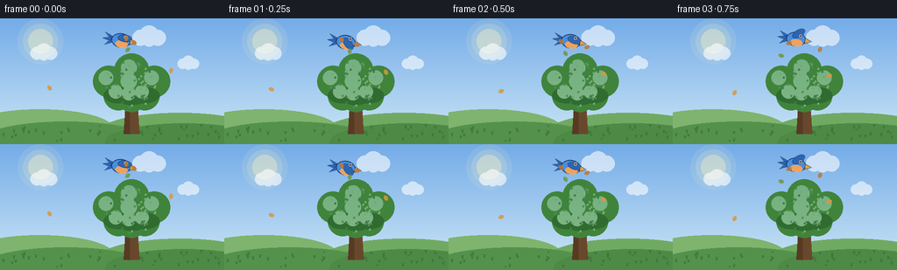
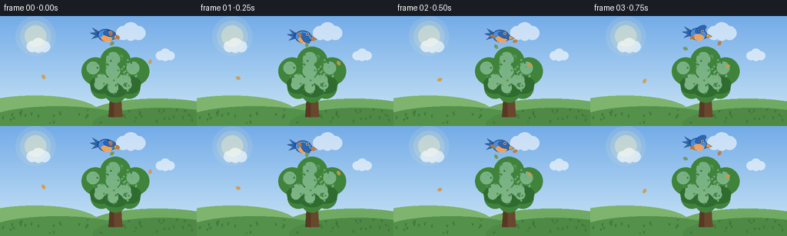

CODING AGENTS AS PIXEL WORLD MODELS
traex/Seed-2.1-Pro-0915 · dynamic_spatial_relationship_0047
点击播放 · 原生 RGB 像素
逐轮保存的候选
回放视频、检查图与代码变化。
每份候选均可单独播放。实际图片检查记录在下方工具轨迹中。
候选 01播放与检查图
点击播放 · 原生 RGB 像素


展开代码变化
--- 上一保存版本
+++ 本次保存版本
@@ -0,0 +1,329 @@
+"""Procedural text-to-video generation.
+
+Scene: a bird hovers above a tree, then flies down behind the tree.
+The bird is composited behind the tree layer, so the canopy/trunk occlude
+it as it reaches the back of the tree.
+"""
+import math
+
+import numpy as np
+from PIL import Image, ImageDraw
+
+import artifact_io
+
+W, H, N, FPS = 256, 144, 20, 4.0
+S = 2 # supersampling factor
+W2, H2 = W * S, H * S
+
+TREE_X = 150
+CANOPY_TOP = 40.0
+
+# ---------------------------------------------------------------------------
+# Small helpers
+# ---------------------------------------------------------------------------
+
+def sgn_smooth(u):
+ u = min(1.0, max(0.0, u))
+ return u * u * (3 - 2 * u)
+
+
+def lerp(a, b, t):
+ return a + (b - a) * t
+
+
+def bezier(p0, p1, p2, u):
+ return (1 - u) ** 2 * p0 + 2 * (1 - u) * u * p1 + u ** 2 * p2
+
+
+def rotate_about(tile, angle_deg, pivot):
+ """Rotate an RGBA tile around a pivot while keeping its canvas size."""
+ t = math.radians(angle_deg)
+ c, sn = math.cos(t), math.sin(t)
+ px, py = pivot
+ matrix = (
+ c, sn, px - c * px - sn * py,
+ -sn, c, py + sn * px - c * py,
+ )
+ return tile.transform(
+ tile.size, Image.AFFINE, matrix, resample=Image.Resampling.BICUBIC
+ )
+
+
+def rescale_center(tile, scale):
+ if abs(scale - 1.0) < 1e-3:
+ return tile
+ new = tile.resize(
+ (max(1, round(tile.width * scale)), max(1, round(tile.height * scale))),
+ Image.Resampling.LANCZOS,
+ )
+ out = Image.new("RGBA", tile.size, (0, 0, 0, 0))
+ out.paste(new, ((tile.width - new.width) // 2, (tile.height - new.height) // 2), new)
+ return out
+
+
+# ---------------------------------------------------------------------------
+# Background (static) and per-frame sky decoration
+# ---------------------------------------------------------------------------
+
+def build_background():
+ top = np.array([116, 172, 232], dtype=np.float32)
+ horizon = np.array([206, 231, 246], dtype=np.float32)
+ t = np.linspace(0.0, 1.0, H2, dtype=np.float32)[:, None, None]
+ grad = top * (1 - t) + horizon * t
+ bg = np.repeat(grad, W2, axis=1).astype(np.uint8)
+ img = Image.fromarray(bg, "RGB").convert("RGBA")
+ d = ImageDraw.Draw(img)
+
+ # Soft sun, upper left.
+ for r, alpha in ((26, 26), (20, 40), (14, 90)):
+ layer = Image.new("RGBA", img.size, (0, 0, 0, 0))
+ ld = ImageDraw.Draw(layer)
+ cx, cy = 46 * S, 26 * S
+ ld.ellipse((cx - r * S, cy - r * S, cx + r * S, cy + r * S),
+ fill=(255, 244, 190, alpha))
+ img.alpha_composite(layer)
+
+ # Rolling hills and ground.
+ ground_y = 122
+ d.rectangle((0, ground_y * S, W2, H2), fill=(96, 156, 84, 255))
+ d.ellipse((-40 * S, 104 * S, 130 * S, 150 * S), fill=(126, 180, 110, 255))
+ d.ellipse((110 * S, 108 * S, 300 * S, 156 * S), fill=(112, 170, 98, 255))
+ d.ellipse((-20 * S, 118 * S, 170 * S, 160 * S), fill=(84, 146, 76, 255))
+ d.ellipse((120 * S, 120 * S, 300 * S, 162 * S), fill=(78, 138, 70, 255))
+
+ # Grass tufts.
+ rng = np.random.default_rng(7)
+ for _ in range(46):
+ x = int(rng.integers(4, W - 4))
+ y = int(rng.integers(ground_y + 2, H - 2))
+ h = int(rng.integers(2, 5))
+ col = (60, 116, 56, 255)
+ d.line((x * S, y * S, (x - 1) * S, (y - h) * S), fill=col, width=S)
+ d.line((x * S, y * S, (x + 1) * S, (y - h) * S), fill=col, width=S)
+ return img
+
+
+def draw_clouds(img, frame):
+ layer = Image.new("RGBA", img.size, (0, 0, 0, 0))
+ d = ImageDraw.Draw(layer)
+ clouds = [
+ (190 + frame * 0.35, 22, 1.0),
+ (70 + frame * 0.22, 40, 0.8),
+ (235 + frame * 0.18, 52, 0.65),
+ ]
+ for cx, cy, scale in clouds:
+ cx = cx % (W + 40) - 20
+ for dx, dy, r in ((-10, 0, 9), (0, -3, 11), (10, 0, 9), (0, 2, 8)):
+ x, y, rr = (cx + dx * scale) * S, (cy + dy * scale) * S, r * scale * S
+ d.ellipse((x - rr, y - rr, x + rr, y + rr), fill=(255, 255, 255, 150))
+ img.alpha_composite(layer)
+
+
+# ---------------------------------------------------------------------------
+# Tree (foreground layer; opaque silhouette occludes the bird)
+# ---------------------------------------------------------------------------
+
+def build_tree():
+ tree = Image.new("RGBA", (W2, H2), (0, 0, 0, 0))
+ d = ImageDraw.Draw(tree)
+ cx = TREE_X * S
+
+ # Trunk with a gentle taper, plus a shaded side.
+ trunk_top, trunk_bottom = 88 * S, 132 * S
+ d.polygon(
+ [(cx - 9 * S, trunk_bottom), (cx - 6 * S, trunk_top),
+ (cx + 6 * S, trunk_top), (cx + 9 * S, trunk_bottom)],
+ fill=(104, 72, 45, 255),
+ )
+ d.polygon(
+ [(cx - 9 * S, trunk_bottom), (cx - 2 * S, trunk_bottom),
+ (cx - 2 * S, trunk_top), (cx - 6 * S, trunk_top)],
+ fill=(88, 58, 36, 255),
+ )
+ # Branches reaching into the canopy.
+ d.line((cx, 96 * S, cx - 16 * S, 78 * S), fill=(104, 72, 45, 255), width=3 * S)
+ d.line((cx, 94 * S, cx + 15 * S, 76 * S), fill=(104, 72, 45, 255), width=3 * S)
+
+ # Canopy: overlapping foliage blobs.
+ blobs = [
+ (-26, -2, 18), (0, -14, 20), (26, -2, 18),
+ (-15, 14, 17), (15, 14, 17), (0, 2, 21), (0, 16, 17),
+ ]
+ base = (64, 132, 60)
+ dark = (48, 108, 48)
+ light = (104, 168, 86)
+ for dx, dy, r in blobs:
+ x, y, rr = (TREE_X + dx) * S, (74 + dy) * S, r * S
+ d.ellipse((x - rr, y - rr, x + rr, y + rr), fill=base + (255,))
+ # Shaded lower blobs.
+ for dx, dy, r in ((-15, 14, 17), (15, 14, 17), (0, 16, 17)):
+ x, y, rr = (TREE_X + dx) * S, (74 + dy) * S, r * S
+ d.ellipse((x - rr, y - rr * 0.55, x + rr, y + rr * 0.55),
+ fill=dark + (255,))
+ # Highlights on the upper-left of each blob.
+ for dx, dy, r in blobs:
+ x, y, rr = (TREE_X + dx - 3) * S, (74 + dy - 4) * S, r * 0.45 * S
+ d.ellipse((x - rr, y - rr, x + rr, y + rr), fill=light + (180,))
+ # A few individual leaf dots for texture.
+ rng = np.random.default_rng(11)
+ for _ in range(60):
+ ang = rng.uniform(0, 2 * math.pi)
+ rad = rng.uniform(0, 1.0) ** 0.5
+ bx = TREE_X + math.cos(ang) * rad * 30
+ by = 74 + math.sin(ang) * rad * 28
+ col = tuple(rng.choice([light, base, dark]))
+ d.ellipse((bx * S - S, by * S - S, bx * S + S, by * S + S),
+ fill=col + (220,))
+ return tree
+
+
+# ---------------------------------------------------------------------------
+# Bird sprite (faces +x in local coordinates)
+# ---------------------------------------------------------------------------
+
+BIRD_TILE = (96, 72) # at 2x supersampling
+BIRD_CENTER = (BIRD_TILE[0] // 2, BIRD_TILE[1] // 2)
+
+BLUE = (72, 142, 222, 255)
+BLUE_DARK = (44, 102, 178, 255)
+OUTLINE = (28, 58, 108, 255)
+BELLY = (236, 162, 96, 255)
+BEAK = (240, 158, 52, 255)
+
+
+def build_bird(flap_deg, heading_deg, scale):
+ tile = Image.new("RGBA", BIRD_TILE, (0, 0, 0, 0))
+ d = ImageDraw.Draw(tile)
+ ox, oy = BIRD_CENTER
+
+ def p(x, y):
+ return (ox + x * S, oy + y * S)
+
+ # Tail feathers.
+ for tip_y, tip_x in ((-7, -19), (0, -21), (7, -18)):
+ d.polygon(
+ [p(-9, -3), p(-9, 3), p(tip_x, tip_y)],
+ fill=BLUE_DARK, outline=OUTLINE,
+ )
+
+ # Body with dark outline, then a warm belly.
+ d.ellipse((p(-11, -8)[0], p(-11, -8)[1], p(11, 8)[0], p(11, 8)[1]),
+ fill=BLUE, outline=OUTLINE, width=S)
+ d.ellipse((p(-6, 0)[0], p(-6, 0)[1], p(8, 8)[0], p(8, 8)[1]), fill=BELLY)
+
+ # Flapping wing on its own full-size canvas, rotated about the shoulder.
+ wing = Image.new("RGBA", BIRD_TILE, (0, 0, 0, 0))
+ wd = ImageDraw.Draw(wing)
+ sx, sy = p(-2, -2)
+ wd.ellipse((sx - 2 * S, sy - 5 * S, sx + 14 * S, sy + 3 * S),
+ fill=BLUE_DARK, outline=OUTLINE, width=max(1, S - 1))
+ wing = rotate_about(wing, flap_deg, (sx, sy))
+ tile.alpha_composite(wing)
+
+ # Beak and eye (drawn last so the wing never covers the face).
+ d.polygon([p(10.5, -2.5), p(18, 0.5), p(10.5, 3.5)], fill=BEAK, outline=OUTLINE)
+ ex, ey = p(5, -4)
+ d.ellipse((ex - 2.4 * S, ey - 2.4 * S, ex + 2.4 * S, ey + 2.4 * S),
+ fill=(255, 255, 255, 255), outline=OUTLINE)
+ d.ellipse((ex - 1.1 * S, ey - 1.1 * S, ex + 1.1 * S, ey + 1.1 * S),
+ fill=(20, 26, 34, 255))
+ d.ellipse((ex - 0.4 * S, ey - 0.4 * S, ex + 0.2 * S, ey + 0.2 * S),
+ fill=(255, 255, 255, 255))
+
+ tile = rotate_about(tile, heading_deg, BIRD_CENTER)
+ tile = rescale_center(tile, scale)
+ return tile
+
+
+# ---------------------------------------------------------------------------
+# Flight path: hover above the tree, then arc down behind it
+# ---------------------------------------------------------------------------
+
+def bird_state(frame):
+ if frame <= 5:
+ u = frame / 5.0
+ x = lerp(138, 142, sgn_smooth(u))
+ y = 25 + 2.0 * math.sin(frame * 1.3)
+ heading = 8.0
+ elif frame <= 17:
+ u = sgn_smooth((frame - 5) / 12.0)
+ x = bezier(142, 164, 150, u)
+ y = bezier(25, 20, 95, u)
+ # Heading from the local tangent of the path.
+ e = 0.01
+ x1 = bezier(142, 164, 150, min(1.0, u + e))
+ y1 = bezier(25, 20, 95, min(1.0, u + e))
+ x0 = bezier(142, 164, 150, max(0.0, u - e))
+ y0 = bezier(25, 20, 95, max(0.0, u - e))
+ heading = math.degrees(math.atan2(y1 - y0, x1 - x0))
+ else:
+ x, y = 150.0, 95.0
+ heading = 90.0
+ scale = lerp(1.0, 0.92, sgn_smooth((frame - 5) / 12.0)) if frame > 5 else 1.0
+ flap = math.sin(frame * 1.45) * 42.0
+ return x, y, heading, scale, flap
+
+
+# ---------------------------------------------------------------------------
+# Foreground drifting leaves
+# ---------------------------------------------------------------------------
+
+def draw_leaves(img, frame):
+ layer = Image.new("RGBA", img.size, (0, 0, 0, 0))
+ rng = np.random.default_rng(23)
+ colors = [(214, 152, 66, 220), (190, 120, 52, 220), (112, 150, 70, 220)]
+ for i in range(5):
+ bx0 = int(rng.integers(60, 230))
+ phase = rng.uniform(0, 6.28)
+ speed = rng.uniform(1.6, 2.8)
+ y = (frame * speed + rng.integers(0, 90)) % 120 + 18
+ x = bx0 + math.sin(frame * 0.9 + phase) * 12
+ ang = frame * 40 + phase * 30
+ leaf = Image.new("RGBA", (10 * S, 10 * S), (0, 0, 0, 0))
+ ld = ImageDraw.Draw(leaf)
+ ld.ellipse((2 * S, 3 * S, 8 * S, 7 * S), fill=colors[i % 3])
+ leaf = leaf.rotate(ang, resample=Image.Resampling.BICUBIC, expand=True)
+ layer.alpha_composite(
+ leaf, (int(x * S - leaf.width / 2), int(y * S - leaf.height / 2))
+ )
+ img.alpha_composite(layer)
+
+
+# ---------------------------------------------------------------------------
+# Frame assembly
+# ---------------------------------------------------------------------------
+
+def render_frame(frame, include_bird=True):
+ bg = build_background()
+ draw_clouds(bg, frame)
+
+ if include_bird:
+ x, y, heading, scale, flap = bird_state(frame)
+ bird = build_bird(flap, heading, scale)
+ top_left = (round(x * S - BIRD_CENTER[0]), round(y * S - BIRD_CENTER[1]))
+ bg.alpha_composite(bird, top_left)
+
+ bg.alpha_composite(build_tree())
+ draw_leaves(bg, frame)
+
+ final = bg.convert("RGB").resize((W, H), Image.Resampling.LANCZOS)
+ return np.asarray(final, dtype=np.uint8)
+
+
+def main():
+ frames = []
+ print("frame visible_bird_pixels bird_y canopy_top")
+ for f in range(N):
+ frame = render_frame(f, include_bird=True)
+ without = render_frame(f, include_bird=False)
+ visible = int(np.count_nonzero(np.any(frame != without, axis=2)))
+ _, y, _, _, _ = bird_state(f)
+ print(f"{f:5d} {visible:18d} {y:6.1f} {CANOPY_TOP:6.0f}")
+ frames.append(frame)
+
+ artifact_io.save(frames, ".")
+ print("saved", len(frames), "frames via artifact_io.save")
+
+
+if __name__ == "__main__":
+ main()
候选 02播放与检查图
点击播放 · 原生 RGB 像素

展开代码变化
--- 上一保存版本
+++ 本次保存版本
@@ -147,7 +147,9 @@
# Canopy: overlapping foliage blobs.
blobs = [
(-26, -2, 18), (0, -14, 20), (26, -2, 18),
- (-15, 14, 17), (15, 14, 17), (0, 2, 21), (0, 16, 17),
+ (-15, 14, 18), (15, 14, 18), (0, 2, 21), (0, 16, 18),
+ # Extra lower foliage so the descending bird is fully enclosed.
+ (-18, 20, 14), (18, 20, 14), (0, 24, 15),
]
base = (64, 132, 60)
dark = (48, 108, 48)
@@ -156,7 +158,8 @@
x, y, rr = (TREE_X + dx) * S, (74 + dy) * S, r * S
d.ellipse((x - rr, y - rr, x + rr, y + rr), fill=base + (255,))
# Shaded lower blobs.
- for dx, dy, r in ((-15, 14, 17), (15, 14, 17), (0, 16, 17)):
+ for dx, dy, r in ((-15, 14, 18), (15, 14, 18), (0, 16, 18),
+ (-18, 20, 14), (18, 20, 14), (0, 24, 15)):
x, y, rr = (TREE_X + dx) * S, (74 + dy) * S, r * S
d.ellipse((x - rr, y - rr * 0.55, x + rr, y + rr * 0.55),
fill=dark + (255,))
可观测工具轨迹
实际执行的命令与返回图片。
命令 1exit 0
/bin/bash -lc 'ls -la && cat prompt.txt && echo "=== RULES ===" && cat GENERATION_RULES.md && echo "=== SPEC ===" && cat task_spec.json'
命令 2exit 0
/bin/bash -lc 'cat artifact_io.py && echo "=== TEMPLATE ===" && cat player_template.html'
命令 3exit 1
/bin/bash -lc 'cd . && python generate.py'
命令 4exit 0
/bin/bash -lc 'cd . && python generate.py'
命令 5exit 0
/bin/bash -lc 'cd . && python generate.py 2>/dev/null'
保存候选 2 份；完成命令 5 次；可验证图片返回 0 张。原始 API 响应与完整日志保留在本地。